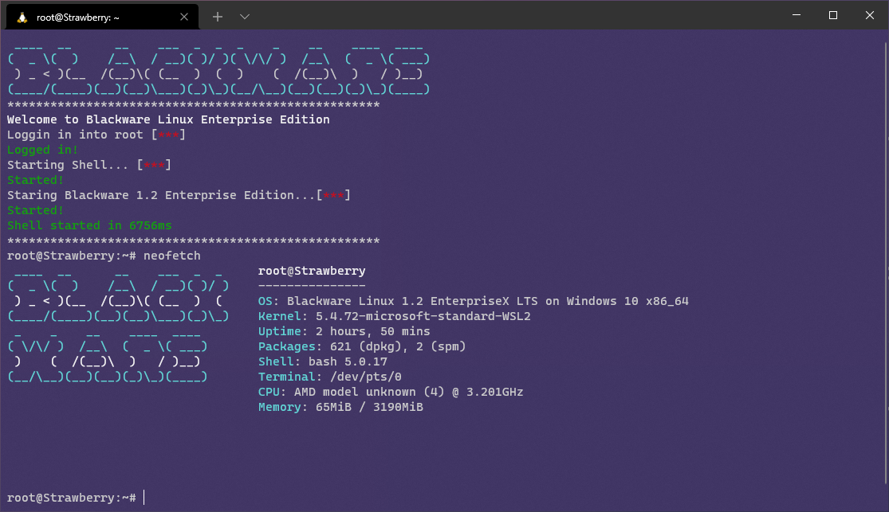
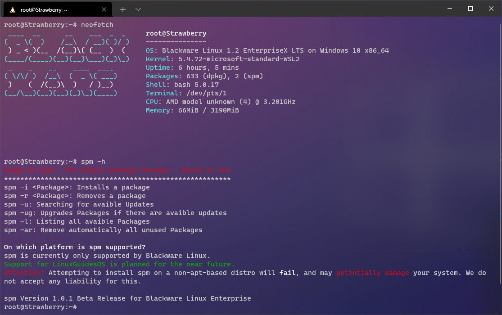
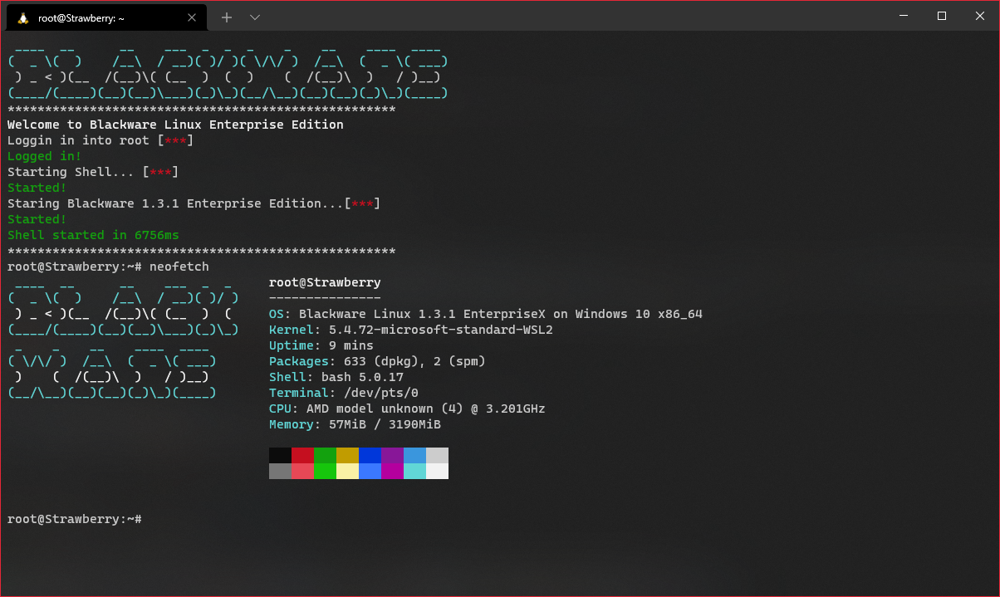
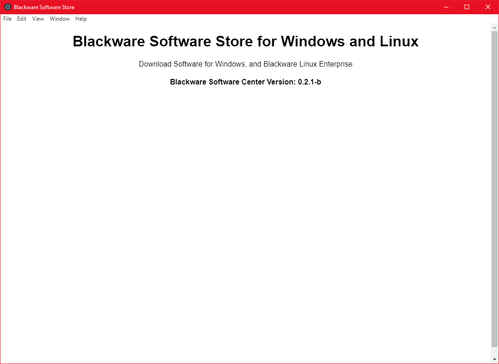
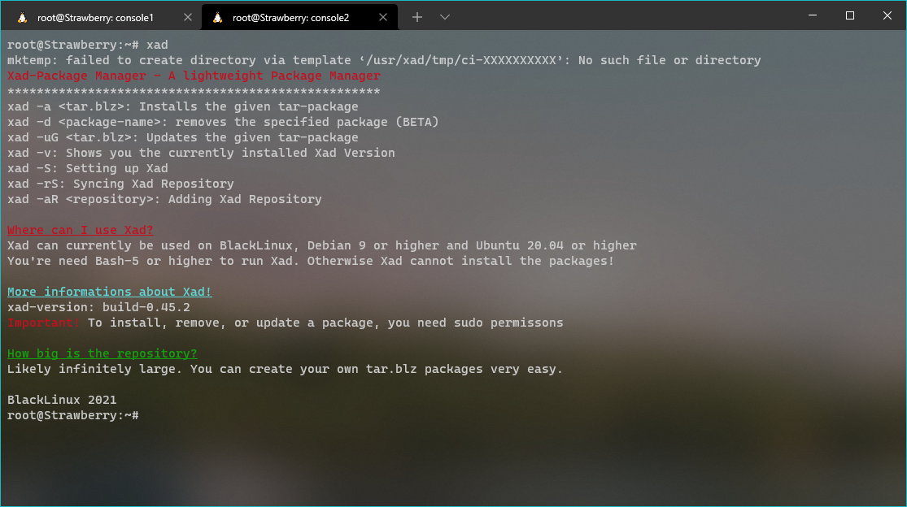
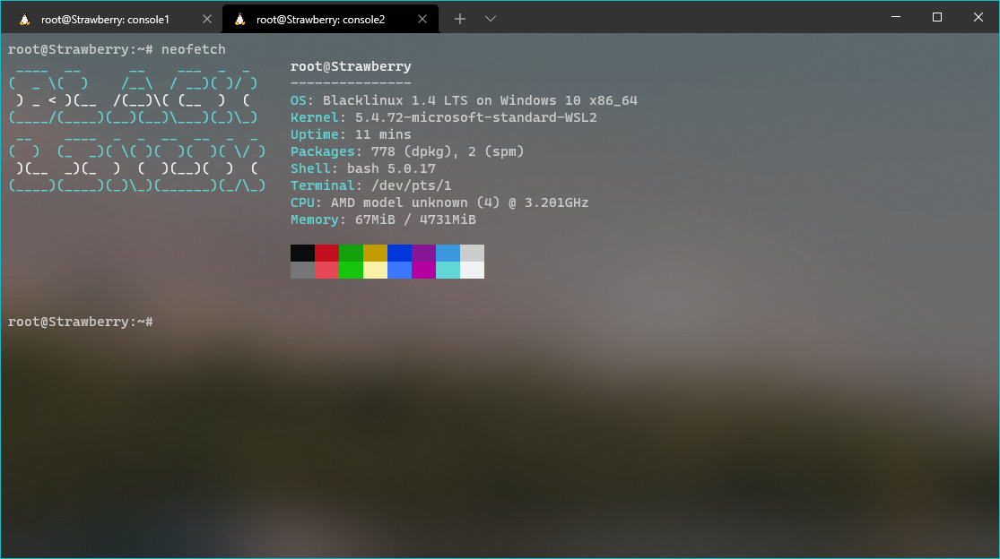
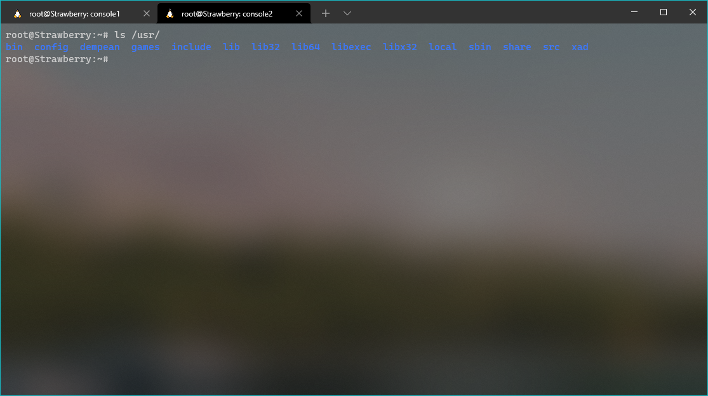
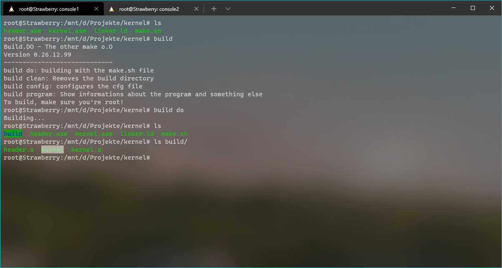

Deutsch:
Blackware 0.1 ist die aller erste Vesion von Blackware und hat das custom neofetch (Name der Distro) ins leben gerufen.
v0.1 hat keine custom commands, nur das custom plymouth.
Blackware Linux 1.1 LTS Relased!
About Blackware 1.1
Deutsch:
Blackware Linux 1.1 beinhaltet viele Bugfixes, und viele neue Commands.
ctl -(arg), sysfetch --(arg), und custom neofetch (neofetch --ascii_distro Blackware)
Blackware Linux 1.2 LTS Relased!
About Blackware 1.2
Deutsch:
Blackware Linux 1.2 beschäftigt sich mit Systemstabilität, und einbauen der custom commands.
Zusätzlich bringt die Version 1.2 die EnterpriseX Version mit sich, die um einiges besser als die Standart-Enterprise Version ist. Derzeit ist die Enterprise Edition komplett kostenfrei.
Die EnterpriseX Version ist auch 'kostenfrei', aber die X-Version ist nur für Developer, bzw Beta-Tester.
Falls du ein Beta-Tester, oder ein Developer sein willst, kontaktier den Blackware Linux Support (blackwarelinux.contact@gmail.com)

Blackware 1.2.1 Released!!
About Blackware 1.2.1
Deutsch:
Blackware 1.2.1 bietet neue Packetquellen, zusätzlich dazu, das spm geupdated wurde zu v1.0.1-beta.
spm wird bald für LinuxGuidesOS verfügbar sein.
Und was sehr cool ist, das spm ein eingetragener Packetmanager im neofetch ist ^^

Blackware Linux 1.3.1 Update wurde Released
Changelog
Blackware Linux 1.3.1 bekommt mit den Update bessere Systemstabilität, und einen Desktop, KDE Plasma mit MacOS BigSur Theme.
Akuell gibt es noch keinen "offiziellen" Release von Blackware Linux 1.3.1 mit den Desktop, aber einen TTY bzw Terminal Release.
Das Theming von KDE Plasma, mit MacOS BigSur dauert lange, da dies sehr aufwendig ist.
Akuell versuchen wir, den Shell Start von Blackware Linux zu verschnellern, da aktuell der Shel Start ungefähr 6 - 8 Sekunden dauert.
Bei einen Shell-Reload kann dies normal sein, da die ganze Shell neugeladen wird (ctl -rl)
Eine weitere wichtige Information ist, das die Blackware Linux Website, nun auf Deutsch umgestellt wird.

Blackware Linux 1.3.1 Update
Eine große Neuerung für Blackware Linux, und Blackware Inc. ist, das wir nun einen Software Store für Blackware Linux und Windows 10 haben.
Dort kannst du verschiedene Software herunterladen. Aber achtung! Blackware Software Center funktioniert nicht in der TTY, oder im Terminal
Dafür werden wir eine eigenständige Version eventuell machen, ODER wir verbessern, bzw. updaten den ALS-Packetmanager, spm.
Dann könnte man spm auch ggf als "Software Center" für das Terminal verwenden.
Offiziell kann man das Software Center leider noch nicht verwenden, da man dies aktuell über NPM starten muss. (Das Software Center verwendet ElectronJS)

Außerdem:
Blackware Linux 1.3.1 verwendet nun den Linux-Kernel 5.11, unter der Stabilen Ubuntu Basis.
Unter Der Debian Basis wird noch den 4er Kernel verwendet, solage bis Deb11 kommt.
Möglicherweise wird Blackware Linux 1.3.1 der LTS Release von Blackware Linux werden, da der letze LTS Release BWL-0.1 war, und der war lange her.
Die Frage ist...? Wieso nicht Blackware Linux 1.3?
Blackware Linux 1.3 hatte noch keine Desktop Enviroment, womit es nicht sinnvoll wäre, das als LTS Version zu veröffentlichen.
BWL-1.3.1 wird LTS vermutlich lange bleiben, und bei Updates, wird aus BWL 1.3.1 bspw BWL 1.3.1-u1.
Dies ist vermutlich der größte Blackware Linux Release, in der BWL Geschichte!
Blacklinux Summer Update! v1.4
Blacklinux's Größtes Update. Seit dem 23.05.2021 in Entwicklung
Die Neuigkeiten:
Als erstes ist es ganz wichtig, zu wissen, das "Blackware Linux" umbennant wurde. Es heißt nun Blacklinux.
Changelog:
=> verbesserte Systemstabilität
=> Komplette neue Versionsunterschiede zwischen der BWL Deb10 und BWL Ubu_K5.11 Version. Damit es nicht mehr zur verwechslung kommt :)
=> *.bpkg gibts nicht mehr für Xad, absofort werden *.tar.blz Archive verwendet
=> Xad wurde auf Build 0.45.2 geupdated.
=> Neue Syntax für Xad
=> Neues Neofetch mit neuem Logo
=> sysfetch wurde entfernt
=> Dempean DE wird eventuell in Python umgeschrieben
=> Neuer Installationsort für Xad, und Dempean
=> Build wurde zum System hinzugefügt
Zu den Changelogs
=> *.bpkg gibts nicht mehr für Xad, absofort werden *.tar.blz Archive verwendet
Absofort solltet ihr Pakete nicht mehr über bpkg-Pakete installieren, sondern über tar.blz-Pakete
=> Xad wurde auf Build 0.45.2 geupdated.
=> Neue Syntax für Xad
Xad wurde überarbeitet und hat eine neue Syntax bekommen.

=> Neues Neofetch mit neuem Logo
Das Neofetch in Blacklinux wurde überarbeitet, insgesamt wurde das Logo, und Information angepasst.

=> Neuer Installationsort für Xad, und Dempean
Xad und Dempean sind jetzt unter /usr/xad oder für Dempean /usr/dempean zu finden

=> Build wurde zum System hinzugefügt
Build ist ein neues Programm für jede Linux Distrobution die Bash-Scripte ausführen kann.
Hier zeigen wir euch, die Build im einsatz kommt:

Was macht Blacklinux 1.4 so besonders?
Wir haben viel für den Blacklinux Kernel gearbeitet, und das End Ergebnis sollte bald erscheinen.
Von den ersten Tag an, wo Blacklinux erschienen ist, bis jetzt, hat sich sehr viel getan. In der Version 0.1 gab es nur das Custom-Neofetch, aber mehr gab es nicht!
Mit der Zeit, wie Version 1 wurden die ersten Programme programmiert.
Xad, und Dempean gab es zu der letzen Version noch gar nicht, Build genauso nicht. Es wurde ein haufen an Arbeit in Blacklinux reingesteckt, und wir hoffen, das dir die Blacklinux Software gefällt!
Das War der Blacklinux 1.4 Major Release! Künftig kommen noch Updates zur Version 1.4, das war's nämlich noch nicht ;)